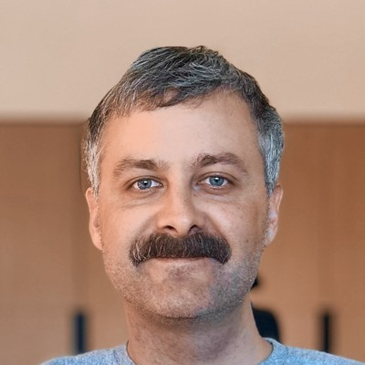

Engineering UA creatives for Cooking Fever (500M+ downloads, 15M monthly players) and Airplane Chefs — Nordcurrent's global hits. Full-cycle ownership from concept to delivery, with performance validated through A/B testing across Tier-1 markets.
I build AI production pipelines: scripts and storyboards with LLMs, assets in Seedream / Flux Kontext, animation in Kling / Seedance, final polish in After Effects — so more concepts reach testing, faster.